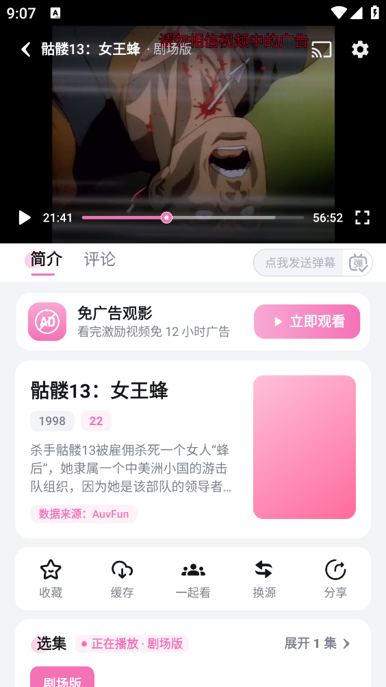

AuvFun 用了大半年才发现的 5 个隐藏开关——数据源切换只是冰山一角
每天打开 AuvFun 追新番、缓存离线，一直以为它就是个流畅的播放器。直到某天播放器卡了、清晰度死活切不上 4K、内部存储又顶不住了，才一个个挖出那些藏得真深的冷门功能。
引子
说出来你可能不信，我从AuvFun官网拿过来用，追番大半年了，一直把它当成一个"能播能缓存"的播放器——排期表每天早上扫一眼就关，分类频道只点热门那几个，设置页更是几乎没翻过。直到上个月遇到三个糟心事：4K 清晰度死活切不上、128GB 的内部存储见底、某周忙忘了追更，补番时才惊觉排期表还能翻上周的记录。
那之后我就把 AuvFun 从首页到设置页翻了个底朝天，挖出了好几个官方都不怎么宣传的隐藏开关。今天把五个最有用的整理出来——不是那种"调个亮度"的边角料，是真能解决实际痛点的功能。
数据源切换：别以为清晰度是固定的
这是我踩过最久的坑。之前在播放器里调清晰度，发现只有 720P 和 1080P 两个档位，以为这部番就是没 4K 源，凑合看了半个月。结果某天切到另一部番，4K 按钮居然亮了——同一部 APP，怎么换番就有 4K 了？
后来才反应过来，不是番剧的问题，是数据源的问题。后来去AuvFun文档翻了一下才弄明白，AuvFun 每部番背后接了好几条播放源，不同源的清晰度档位完全不一样。我之前一直在用默认源，那个源刚好不提供 4K 档。
藏在哪？就在播放器界面。仔细看右上角或者屏幕中央弹出的控制条，有个不太起眼的小图标，可能标着"源"或者一个网络节点的样子。点一下就会弹出当前可用的数据源列表，挨个试，总能找到一个带 4K 的。切换时会短暂缓冲一下，之后画质立刻上来。
这个功能对画质党太重要了——很多人以为 AuvFun 没有某部番的 4K，其实只是没切到对的源而已。不过也别抱太高预期，有些老番和剧场版确实所有源都只有 1080P，不是没找对，是片源本身就没原生 4K。

把缓存搬到 SD 卡：内部存储救星
这个功能藏得最深，入口在 我的 → 设置 → 存储设置 → 缓存路径。AuvFun 默认把所有下载的番剧缓存都塞在手机内部存储里，一部 4K 番剧缓存下来要 3~5GB，追几部番存储就报警了。
把缓存路径切到 SD 卡，空间问题立刻解决。不过切换之前要确认几个前提：手机得有实体 SD 卡槽（iPhone 用户直接跳过这条）、Android 版本 6.0 以上、AuvFun 版本 2.0 以上——还没装的话可以从AuvFun下载拿最新版。旧版本可能不支持这个功能。
切换的时候注意，部分版本会自动把已经下载的缓存番剧迁移到新路径，部分版本需要手动重新下载。观看记录、收藏夹、金币和设置这些东西不受影响，它们存在应用数据区，跟缓存目录是分开的。
还有一个容易踩的坑：Android 10 之后的分区存储机制，不允许应用直接在 SD 卡根目录读写。AuvFun 会在 SD 卡的专属目录里放数据，路径大概是 Android/data/com.auvfun/——别用文件管理器手动删这个目录里的东西，删错了缓存番剧就读不出来了。
排期表能翻历史：补番神器
排期表大家都用——每天早上扫一眼今天有什么番更新。但你知道它还能翻上周的排期吗？
我是上个月发现的。那周出差忙忘了追更，回来想补番，打开排期表下意识往右滑——居然滑到了上一周的记录。之前一直以为排期表只展示当天和未来几天的，没想到历史也留着。
入口很隐蔽：排期表界面顶部有几个日期 tab，点着往左滑就能翻。支持看过去一周的更新记录，每一条都标着番剧名称、更新时间和集数。错过了哪部番，点一下直接跳转到播放页面补追，比在搜索引擎里搜快多了。
不是所有版本都有这个功能——老版本可能只显示当天排期。如果你发现自己的 AuvFun 没这个入口，去应用设置里看看有没有更新。

分类频道的二级筛选：找番效率翻三倍
AuvFun 的分类频道按题材分了热血战斗、恋爱青春、悬疑推理、国漫专区、4K 专区、经典老番、治愈日常这些大类，大家应该都用过。但进了分类之后还要再按地区、年份、状态、排序去筛选，这层大多数人直接忽略了。
举个例子：想看 2010 年以后的国产悬疑番，直接进「国漫专区」，然后选二级筛选——地区选中国、年份选 2010 年以后、排序按热度。刷出来的列表比从全部国漫里翻效率高太多。想补老番？进「经典老番」后按年份排序，从上古的 EVA 一路刷到近年的作品。
还有一个好用的筛选：状态选「已完结」。连载中的番总想着还有下一集，容易追一半就忘了。先把已完结的看完再追新番，追番节奏会舒服很多。
排期表一键标记想看：别手动去收藏夹搜
看到想看的新番，你是不是习惯退出排期表、去番剧详情页点收藏？其实排期表界面里直接点一下番剧条目，就会自动加入收藏夹。
标记之后，这部番更新时会自动推送提醒给你。比进详情页操作快了至少两步——追番讲究的就是效率，多一步都嫌麻烦。
最后说一个别踩的坑
把缓存切到 SD 卡之前，最好确认一下你的 SD 卡等级。SD 卡的读写速度比手机内部存储慢得多，特别是批量下载多部番剧的时候，写入速度可能卡得感人。我之前用了一张便宜的 Class 10 SD 卡，同时下载三集 4K 番剧，速度跌到每秒 1MB 以下，等得想骂街。
如果常批量下载，至少要买 UHS-I U3 级别的 SD 卡，写入速度才能跟上。内部存储够的话还是优先用内部存储，速度和稳定性都更好——SD 卡毕竟是可插拔的，用久了有可能松动或损坏，存在里面的缓存番剧跟着遭殃。
把它用透
AuvFun 这类 APP，大家通常只用它最表面的播放功能，隐藏在设置页和播放器深处的开关很少有人会去翻。数据源切换解决了"为什么我没有 4K"的长期困扰，SD 卡迁移让我的内部存储从飘红回到了健康线，历史排期表帮我补完了出差落下的三部番。
不是每个隐藏功能都对所有人有用——如果你不用 SD 卡，那存储路径切换就是个废功能；如果你从不补老番，历史排期也可以忽略。但数据源切换和排期表一键收藏，我觉得是每个追番党都值得挖出来的实用开关。毕竟，把手上的工具用透了，比换一个新工具更划算。这套整理过的功能说明也在GitHub、Gitee和GitCode上各存了一份，谁知道哪天会不会因为不可抗原因突然消失呢。